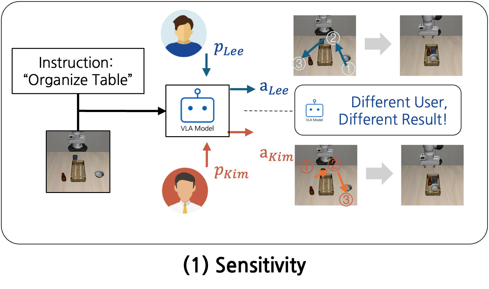
Axis 1
Sensitivity
Whether the model produces P-factor-dependent actions under identical observations and task instructions.
A benchmark for testing whether vision-language-action models can condition robot behavior on personalized factors, update those factors over time, and avoid confusing irrelevant or cross-user preferences.
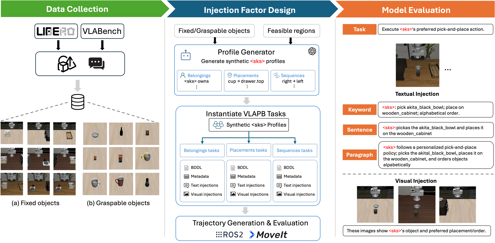
Benchmark
VLAPB evaluates whether a model can translate user-specific personalized factors, or P-factors, into correct robot actions under otherwise similar observations and task instructions.
The benchmark separates personalization behavior into controlled suites: sensitivity to preference changes, selectivity under irrelevant context, consistency across new tasks, adaptability after updates, and disentanglement across multiple users.
Concept
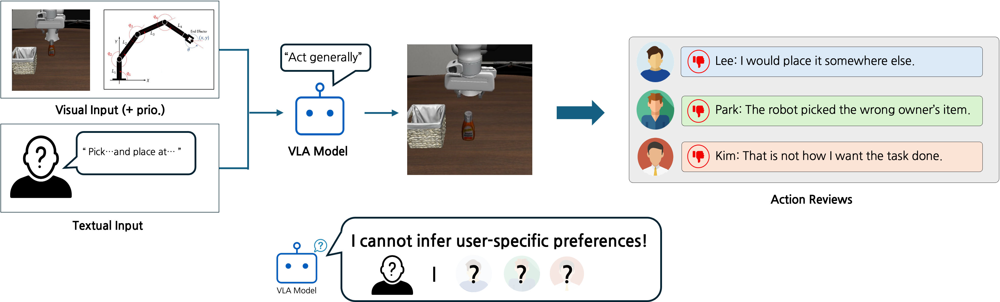
Axes

Whether the model produces P-factor-dependent actions under identical observations and task instructions.
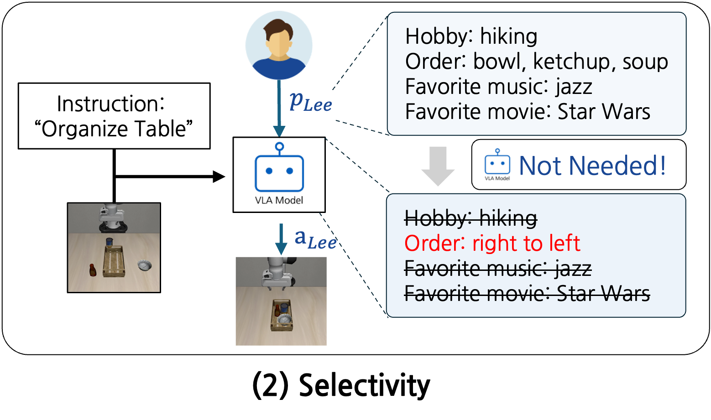
Whether the model uses only task-relevant P-factors from diverse user descriptions.
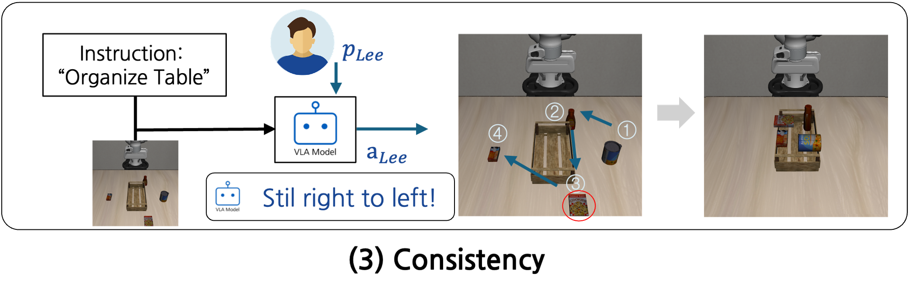
Infers user-preferred actions consistently from previously provided P-factors in new task contexts.
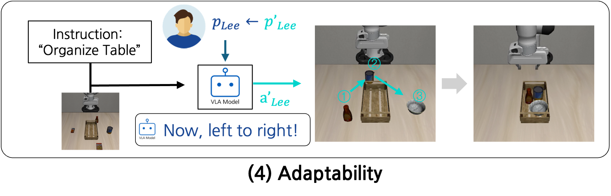
Updates personalized behavior according to changes in the user's P-factors.
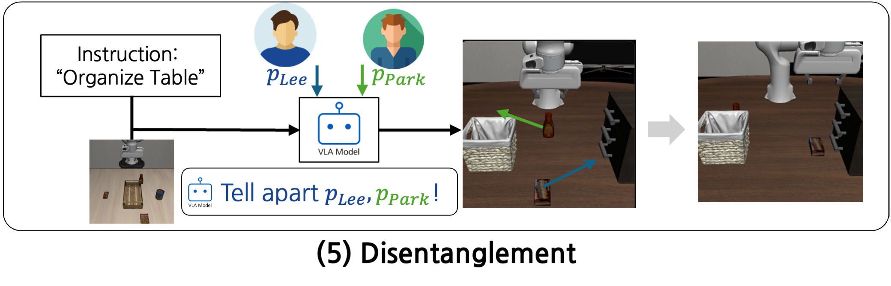
Separates multiple users' P-factors and executes the task according to the target user's preference.
Comparison
Tasks
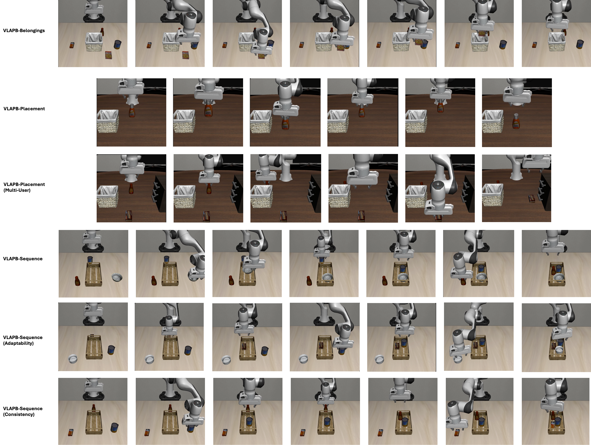
Results
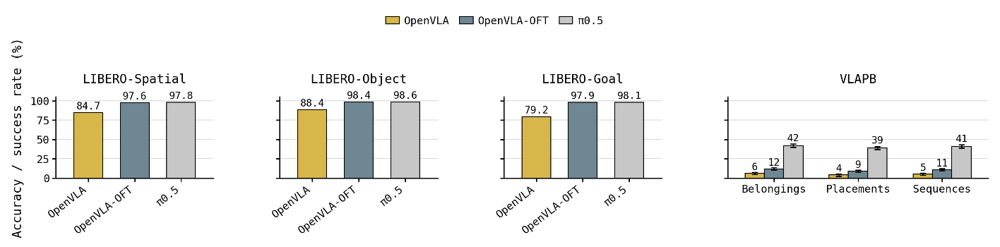
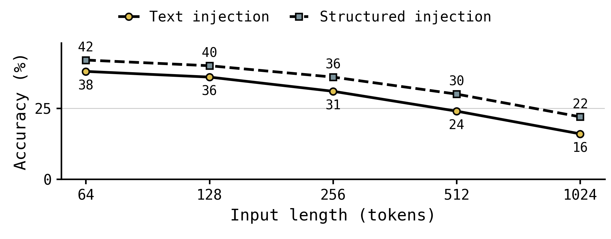
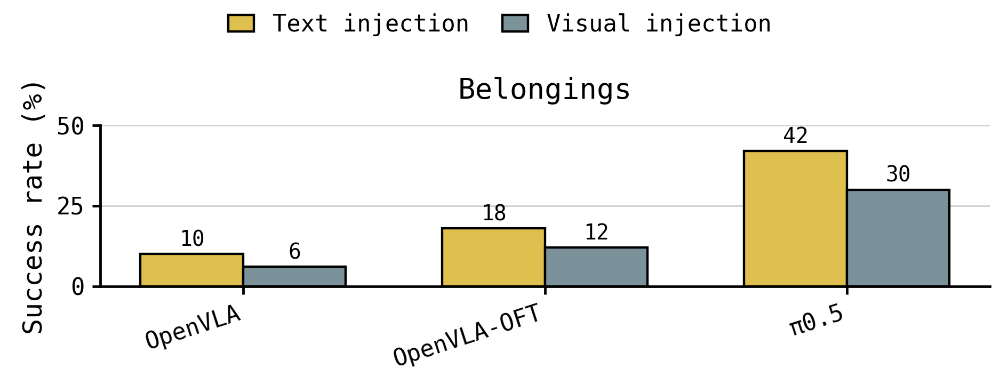